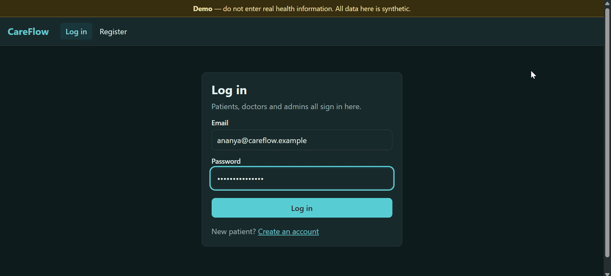

Featured · Full-stack + Voice AI · 2026
CareFlow — voice-first hospital assistant
Patients book appointments and follow a live queue; doctors run their queue and broadcast delays; admins see department load and the assistant's latency. CareBot routes each message to one of four specialist agents and answers by text or voice in English, Hindi or Kannada.
- Two voice pipelines: Gemini Live speech-to-speech (first audio in 2.3 s at P50), and a cascade of Silero VAD, faster-whisper and streamed TTS, with barge-in and automatic fallback.
- Halved the cascade's time to first audio, from 7.9 s to 4.0 s, by benchmarking each stage: a shorter Whisper window cut speech-to-text from 4.1 s to 1.0 s.
- Safety guardrails block diagnoses, prescriptions and dosages, also on spoken replies, by checking the live transcript while holding audio for 300 ms.
- Reliability: Gemini → Ollama → rule-based failover with a circuit breaker and a Redis response cache; 0 failures with 50 simulated patients at once.
FastAPI · React · MongoDB · Redis · Socket.IO · WebSockets · Gemini · faster-whisper · Docker · GitHub Actions
Demo login: ananya@careflow.example / careflow-demo-1.
Free hosting sleeps when idle, so the first visit can take about a minute.